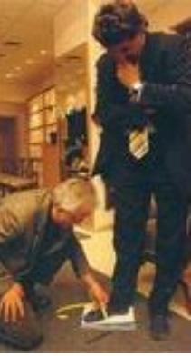

TIPOS DE ZAPATOS
El zapato a medida
El zapato hace a la persona
Moda en los pies
Oxford
Full-Brogue y semi-Brogue
Blucher
Los zapatos de verano
El zapato formal de cordones y costura presuina
El zapato formal de cordones y costura inglesa
Los mocasines
Mocasines a la italiana
Monkstrap: El zapato con hebilla
Los bicolores - clásico americano
Sinónimo de impermeable
Clásicos
De Golf
Botas
* La bota - Su historia (Lic. Richard Danta)
* Las Botas y su decoración: el siglo XlX (Lic. Richard Danta)
* Las Botas y su decoración: el siglo XX (Lic. Richard Danta)
* Una historia de la bota vaquera D. W. Frommer II
Traducción al Español: Licenciado Richard Danta
FABRICACION Y ARMADO DEL ZAPATO
La limpieza del zapato
Diez reglas para el cuidado del zapato
El arte de limpiar zapatos
Tipos de hormas extendedoras
El calzador
Cuando el zapato aprieta...
La reparación del calzado (reparación y sustitución de la media suela y el tacón)
COMO SE HACE UN ZAPATO
1
La horma de un zapato de fabricación industrial sólo puede elaborarse a partir de unos valores medios que suelen dar muy buenos resultado. Por ejemplo, en Church's existen hasta seis anchuras distintas para cada modelo. La mayorís de los hombres encuentran lo que necesitan. .
2
Después de que la plantilla haya sido fijada a la horma se pega una fina cinta de piel, la pestaña del hendido. A ella se coserá más tarde el cerquillo y la pala. Por eso, el zapato de cerquillo cosido es estable y flexible.
3
En los zapatos de fabricación industrial las plantillas se cortan a la medida adecuada con ayuda de una máquina para minimizar la pérdida del material. Los zapateros a medida cortan las suelas una a una.

4
La pestaña del hendido puede igualmente elaborarse a partir de la plantilla. Así proceden también los zapateros a medida, pero estos trabajan normalmente sin máquinas y separan la pestaña del hendido de la plantilla.
MEDIDAS Y EL PIE
No existen dos pies que sean exactamente iguales. Por este motivo, a un zapatero solamente le es posible confeccionar zapatos cómodos de las medidas correspondientes cuando dispone de toda la información necesario sobre los dos pies del cliente. En la confección de un traje a medida, el sastre recomienda por lo menos dos o tres pruebas, mientras que el zapatero se las arregla con sólo una gracias al denominado zapato de prueba. Para ello es absolutamente necesario destinar suficiente tiempo a la toma de medidas, a ser posible de una a dos horas. Es muy frecuente que resulte difícil encontrar el momento en que puede conseguirse el resultado más preciso.
EL BUEN ZAPATO
Siempre se ha dicho que los zapatos son la prenda más importante en el atuendo de un hombre. Y es realmente cierto. Una vestimenta perfecta en todos los detalles se verá irremisiblemente arruinada si está acompañada por unos zapatos de mala calidad. Sería mejor ir por la vida descalzo o en calcetines y disculparse aduciendo motivos religiosos, o argüir el robo del calzado, antes de pasearse con unos zapatos baratos y perder toda respetabilidad. De todas maneras, unos buenos zapatos deben ir siempre acompañados de un buen atuendo, puesto que ni siquiera el mejor calzado del mundo podrían compensar un vestuario más bien pobre. Aunque todo esto pueda parecer un poco exagerado, demuestra en cierto modo la importancia de los zapatos. Si usted no tiene la suerte de poder escoger lo mejor en cada detalle de su vestuario, debería entonces repartir su presupuesto de tal manera que la mayor parte de este vaya destinada a comprar unos zapatos de buena calidad. Todavía mejor si invirtiera todo su dinero destinado para ropa en calzado, puesto que como mínimo necesitará dos pares; después de llevarlos, los zapatos deben dejarse reposar como mínimo un día entero.
HORMAS & PARA QUE SIRVEN
La horma es una copia abstracta en madera del pie humano. Una de sus funciones es sustituir el pie durante la confección del zapato para actuar como superficie de trabajo en la que los fragmentos de piel lisos puedan adquirir forma plástica. La segunda función consiste en reflejar la orientación de la moda y los requisitos estéticos; es decir, mostrar una forma perfecta, como el modelo de zapato elegido Durante los últimos cien años, la moda del calzado masculino no ha sufrido variaciones extremas. Existen unos pocos modelos básicos que se diferencian entre sí por la forma de la puntera, en el corte de la parte superior y en los elementos ornamentales. Por ello se han desarrollado modelos de hormas bautizados con el nombre de los modelos característicos, como por ejemplo, la horma Budapest, con puntera alta.
NUMERACION DEL CALZADO
LA NUMERACION FRANCESA
Durante la época de Napoleón (principios del siglo XIX), en Europa se extendió el uso del punto París, equivalente a 2/3 cm., es decir 6,667 mm. Puesto que esta medida no tardó en resultar demasiado grande, cada país introdujo medias medidas: el número 40,5 equivale aproximadamente a 27 cm
LA NUMERACION INGLESA
El sistema inglés quedó fijado por orden del rey de Inglaterra Eduardo II. Este determinó que tres granos de cebada juntos formaban una pulgada (1 pulgada=2,54 cm) y que 12 pulgadas eran un pie (1 pie=30,48 cm.) La unidad de calzado inglés (size) equivalente a la longitud de un grano de cebada, es decir 1/3 de pulgada o 0,846 cm. También en este caso la unidad resultó ser demasiado grande, por lo que se introdujeron números medios: 1/2 size = 0,423 cm.
El sistema de numeración inglés empieza con un longitud para adultos de unos 22 cm. (size 1, equivalente a la 33 francesa). A estos 22 cm. o 8,66 pulgadas se le añada 1/3 de pulgada por número. El número 42 francés se corresponde al número 28 de las tallas métricas y al 8 de la numeración inglesa (22 cm. + (8x0,846) =28,77 cm). La numeración más corriente entre caballeros oscila entre el número 5,5 (número 39 en el sistema francés) y el 11 (número 46 en el sistema francés).
LA NUMERACION AMERICANA
Se trata básicamente de la unidad inglesa size. La diferencia radica en el punto de partida. En el sistema americano, la escala empieza 1,116 mm. antes, lo cual significa que en comparación con el sistema inglés, cada número empieza un poco antes.
10 REGLAS PARA EL CUIDADO DE LOS ZAPATOS
1. Al principio, el cliente sólo puede calzarse los zapatos nuevos durante un máximo de dos a tres horas. Sólo cuando el pie se ha "acostumbrado" completamente al zapato puede empezar a llevarlos todo el día.
2. No debe usar el mismo par de zapatos durante dos días seguidos, sino que debe dejarlos reposar un mínimo de 24 horas.
3. Para calzárselos debe usar siempre un calzador, tanto si se trata de zapatos con cordones, de zapatos con hebilla o de mocasines.
4. Antes de descalzarse debe aflojar los cordones en todos los agujeros, para que el pie pueda salir del zapato fácilmente, sin esfuerzos.
5. Inmediatamente después de descalzarse, debe introducir la horma extendedora en su interior.
6. Aunque el zapato se haya mojado a causa de la nieve o de la lluvia, debe introducir inmediatamente las hormas extendedoras en su interior. A continuación debe colocarlos de lado y dejar que se sequen durante un día entero.
7. Es recomendable que cepille los zapatos después de cada uso, aunque en apariencia no haya disminuido su brillo anterior.
8. Si durante un tiempo no usa los zapatos, debe aplicarles una fina capa de betún y conservarlos en la bolsa que recibió del zapatero, de pie y en el interior de una caja de cartón.
9. El propietario de un zapato hecho a medida no debería prestar nunca sus zapatos, ya que no existen dos pies iguales.
10. Todo zapato nuevo tiene su carácter especial. Su verdadera belleza se aprecia realmente cuando se lleva con traje y en la ocasión adecuada.